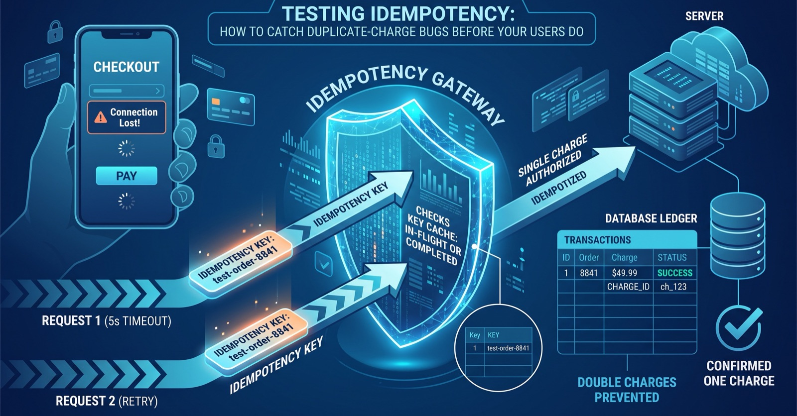

Testing Idempotency: How to Catch Duplicate-Charge Bugs Before Your Users Do
A practical walkthrough of testing idempotency keys in payment and checkout flows, with concrete test cases for catching duplicate charges.
A customer's mobile connection drops for two seconds during checkout. Their app, doing the right thing, retries the payment request. Somewhere on the server, the first request actually went through just fine — it was only the response that got lost. Now two charges exist for one order. This is one of the most common ways fintech and e-commerce systems lose customer trust, and it's rarely caused by a broken payment gateway. It's caused by retry logic that was never tested against the failure modes it was built for.

Idempotency is the mechanism meant to prevent exactly this, and it's a good example of a control that looks solid in a design doc and falls apart the first time someone actually tries to break it in QA.
What idempotency is supposed to guarantee
The pattern is simple on paper: the client generates a unique idempotency key and sends it with a state-changing request (charge a card, create an order, issue a refund). If the same request needs to be retried — because the client timed out, lost connectivity, or the server crashed mid-response — it's sent again with the same key. The server is supposed to recognize the key, skip reprocessing, and return the original result instead of creating a second charge or a second order.
Stripe's engineering write-up on the pattern is a good reference for the underlying problem: a network failure can happen before the server receives a request, while it's processing, or after it finishes but before the response reaches the client. From the client's point of view, all three look identical — a timeout — so a retry is often the only reasonable action. The idempotency key is what lets the server tell "this is a genuine retry of a call I already handled" apart from "this is a new, separate request."
That sounds like a solved problem. In practice, teams under-test three things: what happens when a retry arrives while the first request is still in flight, what happens when a key is reused with different data, and what happens if the key's storage expires or gets evicted before a slow retry shows up.
A concrete scenario
Imagine a checkout service for an online store. A customer submits payment, the mobile client sets a 5-second timeout, and the request takes 6 seconds to complete on a loaded day. The client retries automatically with the same idempotency key. If the server only checks "does this key exist in my cache of completed requests," it will miss the case where the first request is still mid-processing, and both requests will race to charge the card. This is exactly the "in-flight conflict" case that's easy to leave untested because it only shows up under load or latency, not in a quiet staging environment where every call finishes in 50ms.
A useful way to test this deliberately, instead of hoping load testing stumbles into it, is to fire two identical requests concurrently and inspect the full system state afterward, not just the HTTP response:
import concurrent.futures
import requests
idem_key = "test-order-8841"
payload = {"order_id": "8841", "amount_cents": 4999}
headers = {"Idempotency-Key": idem_key}
def send():
return requests.post(
"https://api.example.com/v1/charges",
json=payload, headers=headers, timeout=10,
)
with concurrent.futures.ThreadPoolExecutor(max_workers=2) as pool:
r1, r2 = [f.result() for f in
[pool.submit(send), pool.submit(send)]]
# Both calls should return the SAME charge id
assert r1.json()["charge_id"] == r2.json()["charge_id"]
# And the ledger should show exactly one charge for this order
charges = requests.get(
f"https://api.example.com/v1/orders/8841/charges"
).json()
assert len(charges) == 1The assertion on the charge ledger, not just the two HTTP responses, is the part teams skip most often. Two identical 200 responses can still hide two separate database rows if the race condition lands in the wrong place — the API layer can look idempotent while the accounting layer isn't.
Worth testing alongside the happy-path retry: reusing the same key with a different payload (should be rejected, not silently processed with the new data), sending the key with the amount changed by a cent to catch weak matching logic, letting the key expire before a legitimately slow retry arrives, and killing the server process mid-request to simulate the "completed but response lost" case that pure timeout testing won't reproduce.
Where this approach falls short
Idempotency testing has real limits. Concurrency bugs are timing-dependent, so a test that passes once doesn't prove the race is fixed — it proves you didn't hit the window that time. Running the concurrent-request test repeatedly, or under artificial load, catches more than a single run does, but it's still probabilistic, not a proof.
It's also not a universal fix. Idempotency keys protect against retries of the same logical operation; they don't protect against a user double-clicking "pay" and generating two different keys for what is, to them, one action — that has to be solved at the UI layer (disabling the button, debouncing) as well as the API layer. And an idempotency layer built on a cache with a short TTL can quietly stop working the moment a retry arrives slower than expected, which is a production incident that looks nothing like a functional bug — it looks like an intermittent, low-frequency double charge that's hard to reproduce on demand.
Finally, this kind of testing has a real cost. Concurrent test harnesses and process-kill simulations take more setup than a straightforward request/response test, and it's tempting to skip them under deadline pressure. That's usually the wrong trade for anything that touches money.
What to do next
Start by listing every state-changing endpoint in your system that involves money, inventory, or account state, and confirm which ones currently support idempotency keys at all — many teams find gaps here immediately. For the ones that do, write a concurrent-duplicate-request test like the one above and check the downstream ledger, not just the response code. Add a test for key reuse with a changed payload, since silent overwrites are a common and dangerous bug. Finally, put at least one of these tests in your regression suite permanently — idempotency protections are exactly the kind of thing a routine refactor, cache change, or new message queue can quietly break months later.
Sources
Kupcu tokom checkout-a na dvije sekunde pukne mobilna veza. Aplikacija, sasvim ispravno, ponovo šalje zahtjev za plaćanje. Negdje na serveru prvi zahtjev je zapravo prošao bez problema — izgubio se samo odgovor. Sada za jednu narudžbu postoje dvije naplate. Ovo je jedan od najčešćih načina na koje fintech i e-commerce sistemi gube povjerenje kupaca, a rijetko ga uzrokuje neispravan payment gateway. Uzrokuje ga logika ponovnih pokušaja koja nikada nije testirana protiv upravo onih kvarova zbog kojih je napravljena.
Idempotentnost je mehanizam koji treba da spriječi baš ovo, i dobar je primjer kontrole koja u dizajn dokumentu izgleda čvrsto, a raspadne se čim neko u QA-u zaista pokuša da je slomi.
Šta idempotentnost treba da garantuje
Obrazac je na papiru jednostavan: klijent generiše jedinstven idempotency ključ i šalje ga uz zahtjev koji mijenja stanje (naplata kartice, kreiranje narudžbe, povraćaj novca). Ako isti zahtjev treba ponoviti — jer je klijentu isteklo vrijeme, izgubio je vezu ili je server pao usred odgovora — šalje se ponovo sa istim ključem. Server bi trebalo da prepozna ključ, preskoči ponovnu obradu i vrati originalni rezultat, umjesto da napravi drugu naplatu ili drugu narudžbu.
Stripe-ov inženjerski tekst o ovom obrascu je dobra referenca za osnovni problem: mrežni kvar se može desiti prije nego što server primi zahtjev, dok ga obrađuje, ili nakon što ga završi, a prije nego što odgovor stigne do klijenta. Iz ugla klijenta sva tri slučaja izgledaju isto — kao istek vremena — pa je ponovni pokušaj često jedini razuman potez. Idempotency ključ je ono što serveru omogućava da razlikuje „ovo je stvarni ponovni pokušaj poziva koji sam već obradio" od „ovo je novi, zaseban zahtjev".
Zvuči kao riješen problem. U praksi timovi nedovoljno testiraju tri stvari: šta se dešava kada ponovni pokušaj stigne dok je prvi zahtjev još u obradi, šta se dešava kada se ključ ponovo iskoristi sa drugačijim podacima, i šta se dešava ako zapis ključa istekne ili bude izbačen iz keša prije nego što stigne spor ponovni pokušaj.
Konkretan scenario
Zamislite checkout servis online prodavnice. Kupac potvrdi plaćanje, mobilni klijent ima timeout od 5 sekundi, a zahtjevu u danu sa velikim opterećenjem treba 6 sekundi da se završi. Klijent automatski pokušava ponovo sa istim idempotency ključem. Ako server provjerava samo „da li ovaj ključ postoji u mom kešu završenih zahtjeva", propustiće slučaj u kojem je prvi zahtjev još u obradi, i oba zahtjeva će se utrkivati da naplate karticu. Ovo je upravo slučaj „konflikta u toku obrade" koji je lako ostaviti netestiranim, jer se pojavljuje samo pod opterećenjem ili kašnjenjem, a ne u mirnom staging okruženju gdje se svaki poziv završi za 50ms.
Koristan način da se ovo namjerno testira, umjesto da se nadate da će load testiranje slučajno naići na problem, jeste da istovremeno pošaljete dva identična zahtjeva i nakon toga provjerite kompletno stanje sistema, a ne samo HTTP odgovor:
import concurrent.futures
import requests
idem_key = "test-order-8841"
payload = {"order_id": "8841", "amount_cents": 4999}
headers = {"Idempotency-Key": idem_key}
def send():
return requests.post(
"https://api.example.com/v1/charges",
json=payload, headers=headers, timeout=10,
)
with concurrent.futures.ThreadPoolExecutor(max_workers=2) as pool:
r1, r2 = [f.result() for f in
[pool.submit(send), pool.submit(send)]]
# Oba poziva treba da vrate ISTI charge id
assert r1.json()["charge_id"] == r2.json()["charge_id"]
# I ledger treba da pokaže tačno jednu naplatu za ovu narudžbu
charges = requests.get(
f"https://api.example.com/v1/orders/8841/charges"
).json()
assert len(charges) == 1Provjera nad knjigom naplata (ledger), a ne samo nad dva HTTP odgovora, je dio koji timovi najčešće preskoče. Dva identična odgovora 200 i dalje mogu skrivati dva odvojena reda u bazi ako race condition pogodi pogrešno mjesto — API sloj može izgledati idempotentno, dok računovodstveni sloj to nije.
Pored ponovnog pokušaja na „srećnom putu", vrijedi testirati i: ponovnu upotrebu istog ključa sa drugačijim payloadom (treba da bude odbijena, a ne tiho obrađena sa novim podacima), slanje ključa sa iznosom promijenjenim za jedan cent kako bi se uhvatila slaba logika poređenja, puštanje da ključ istekne prije nego što stigne legitimno spor ponovni pokušaj, i gašenje serverskog procesa usred zahtjeva kako bi se simulirao slučaj „završeno, ali odgovor izgubljen" koji čisto testiranje timeout-a neće reprodukovati.
Gdje ovaj pristup ne dostiže
Testiranje idempotentnosti ima stvarna ograničenja. Greške istovremenosti zavise od tajminga, pa test koji jednom prođe ne dokazuje da je race condition popravljen — dokazuje samo da taj put niste pogodili prozor. Višestruko pokretanje testa sa istovremenim zahtjevima, ili pod vještačkim opterećenjem, uhvati više od jednog pokretanja, ali je i dalje stvar vjerovatnoće, a ne dokaz.
Ni ovo nije univerzalno rješenje. Idempotency ključevi štite od ponovnih pokušaja iste logičke operacije; ne štite od korisnika koji dvaput klikne „plati" i tako generiše dva različita ključa za ono što je, za njega, jedna radnja — to mora da se riješi na UI sloju (onemogućavanje dugmeta, debouncing) kao i na API sloju. A idempotency sloj izgrađen na kešu sa kratkim TTL-om može tiho da prestane da radi onog trenutka kada ponovni pokušaj stigne sporije nego što se očekivalo, što je incident u produkciji koji nimalo ne liči na funkcionalnu grešku — liči na povremenu, rijetku duplu naplatu koju je teško reprodukovati na zahtjev.
Na kraju, ovakvo testiranje ima stvaran trošak. Test okruženja za istovremene zahtjeve i simulacije gašenja procesa traže više pripreme od običnog testa zahtjev/odgovor, i primamljivo ih je preskočiti pod pritiskom rokova. Za sve što dira novac to je obično pogrešan kompromis.
Šta dalje
Počnite tako što ćete popisati svaki endpoint u sistemu koji mijenja stanje, a tiče se novca, zaliha ili stanja naloga, i provjerite koji od njih uopšte podržavaju idempotency ključeve — mnogi timovi tu odmah nađu rupe. Za one koji ih podržavaju, napišite test sa istovremenim duplim zahtjevima poput gornjeg i provjerite ledger nizvodno, a ne samo statusni kod. Dodajte test za ponovnu upotrebu ključa sa izmijenjenim payloadom, jer je tiho prepisivanje česta i opasna greška. Na kraju, stavite bar jedan od ovih testova trajno u regresioni skup — zaštite idempotentnosti su upravo ona vrsta stvari koju rutinski refaktoring, izmjena keša ili novi message queue mogu tiho da pokvare mjesecima kasnije.